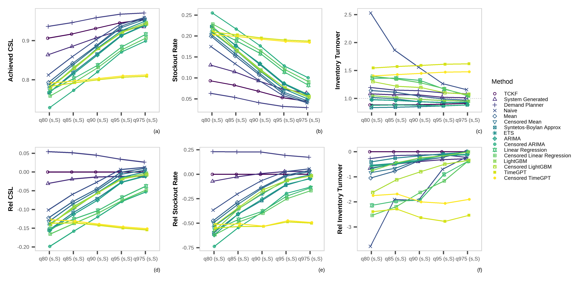

WHAT WAS LOST
Estimating censored demand in family planning supply chains with the Truncated Conformal Kalman Filter
Harsha Halgamuwe Hewage
Data Lab for Social Good Research Group, Cardiff University, UK
Lead Supervisor: Prof. Bahman Rostami-Tabar
Co Supervisors: Prof. Aris Syntetos & Dr. Federico Liberatore
2025-09-16
Image generated using 04-mini-high
Outline

What was never COUNTED . . .
The fundamental question
What we are going to do
Empirical evaluation
What NEXT?
Image generated using 04-mini-high
WHAT WAS NEVER COUNTED…
Seen the UNSEEN
Human story: What data misses

Nilu went to a pharmacy for Product A. It wasn’t in stock.
The system logs it as zero demand.
But the need was real. The system just missed it.
This creates broken trust and leads to create
UNMET DEMAND.
Image generated using 04-mini-high
Seen the UNSEEN
Analytical reality: Why this matters

In supply chains like this, Stockouts censor demand.
Observed sales ≠ actual demand.
Inventory decisions based on this false signal?
Understocking → more stockouts.
Forecasts don’t just underperform. They miss the whole story.
A lost sale = a lost opportunity for care.
Image generated using 04-mini-high
Contraceptive products aren’t easily SUBSTITUTED

*Percent of women who will get pregnant within the first year of typical use.
The BIG PICTURE

In reality…
There are more than
218 million women
like Nilu still have an unmet need for family planning.
Ultimately, this results in dropouts, unwanted pregnancies, and almost 7 million hospitalizations each year in developing countries.
Image generated using 04-mini-high
Sources: USAID, 2020; PATH, 2019; Mukasa et al., 2017; Gilda et al., 2016
Why this is critical

Censorship is structural— stockouts and interruptions are common in FPSC, not rare events.
Field insight— in Côte d’Ivoire and Ethiopia, demand planners repeatedly flagged stockouts as the key barrier.
Forecasting fails under censorship— observed sales understate true demand.
The literature split- prior research often separates forecasting from inventory decisions.
Resources are tightening— with USAID withdrawal, high service levels must be achieved efficiently.
Image generated using 04-mini-high
Sources: Bijvank et al., 2011; Karimi et al., 2021; Thanos et al., 2022 ; Trapero et al., 2024
THE FUNDEMENTAL QUESTION
Key definitions
Stockouts: Periods when demand is higher than available inventory, leading to censored observations of demand.Interruptions: Periods when no products are issued despite available stock, thus artificially recorded as zero demand.Censored Demand: Demand occurring during periods when products are unavailable (stockouts or interruptions), thus not fully observable.True Demand: Actual demand that would have occurred if sufficient stock was available or no service interruptions.
Bridging forecasting, inventory, and impact
How can a demand forecasting model that explicitly handles censored demand due to stockouts and service interruptions improve inventory performance and public health outcomes in contraceptive supply chains?
WHAT WE ARE GOING TO DO
How we can fill the gaps

- RQ1: How accurately can a Tobit Kalman Filter with conformal prediction estimate true demand under censorship?
- RQ2: How does demand reconstruction improve inventory performance and healthcare impact compared to baseline planning methods?
- RQ3: How do planner-adjusted forecasts compare to model-based methods in balancing availability and inventory efficiency?
Image generated using 04-mini-high
Overview of the experimental framework

Truncated Conformal Kalman Filter (TCKF)
State-Space Formulation
\[ X_t = F X_{t-1} + \eta_t, \quad \eta_t \sim \mathcal{N}(0, Q_t) \]
- \(X_t = [\ell_t, \tau_t, \gamma_t]^T\): level, trend, seasonality
- \(F\): state transition matrix with seasonal decay and trend
Observation Equation with Censorship
\[ y_t = \begin{cases} H X_t + \nu_t & \text{if uncensored} \\ 0 & \text{if fully censored} \\ \min(H X_t, s_t) & \text{if partially censored} \end{cases} \]
- \(H = [1, 0, 1]\): maps level and seasonality to observation
- \(s_t\): stock available at time \(t\)
Kalman Prediction Step
\[ \mu_t = H \hat{X}_{t|t-1}, \quad \sigma_t^2 = H P_{t|t-1} H^T + R \]
Truncated Conformal Kalman Filter (TCKF)
Censored Observation Update
\[ \hat{y}_t = \mu_t + \sigma_t \cdot \frac{\phi(z_t)}{1 - \Phi(z_t)}, \quad z_t = \frac{y_t - \mu_t}{\sigma_t} \]
\[ \hat{X}_{t|t} = \hat{X}_{t|t-1} + K_t (\hat{y}_t - \mu_t) \]
- Uses expectation of truncated Gaussian
- For fully censored (\(y_t = 0\)), skip state update; propagate uncertainty
Conformal Prediction for Interval Estimation
\[ D_t \in [\max(0, \mu_t - q_\alpha), \mu_t + q_\alpha] \]
- Residuals from uncensored periods used to calibrate \(q_\alpha\)
- Ensures valid coverage without assuming normality
Note on Initialization: Initial state vector \(X_0 = [\ell_0, \tau_0, \gamma_0]^T\) is extracted via STL decomposition from uncensored periods.
Performance evaluation - Forecast
Point predictions
\[
Forecast\ Value\ Added = (1 -Rel\ RMSE) \times 100\%
\] Values above 0 indicate better performance than TCKF.
\[ Rel\ RMSE = \frac{RMSE_{\text{Method}}}{RMSE_{\text{TCKF}}} \]
\[ RMSE = \sqrt{\frac{1}{n} \sum_{t=1}^{n} (\hat{y}_t - y_t)^2} \]
Probabilistic predictions
The pinball loss at time \(t\) for quantile level \(p\) is defined as:
\[ Q_{p,t} = \begin{cases} 2(1 - p)(\hat{f}_{p,t} - y_t), & \text{if } y_t < \hat{f}_{p,t} \\ 2p(y_t - \hat{f}_{p,t}), & \text{if } y_t \geq \hat{f}_{p,t} \end{cases} \]
\[ \text{Skill Score} = \frac{\text{Pinball Score}_{\text{TCKF}} - \text{Pinball Score}_{\text{Method}}}{\text{Pinball Score}_{\text{TCKF}}} \times 100\% \]
Values above 0 indicate better performance than TCKF.
Performance evaluation - Inventory
Cycle Service Level (CSL): proportion of periods in which stock was available
\[ CSL = \frac{1}{N} \sum_{t=1}^{N} \mathbb{1}(in\_stock_t = 1) \]
Stock-Out Rate (SOR): proportion of periods experiencing a stockout
\[ SOR = \frac{1}{N} \sum_{t=1}^{N} \mathbb{1}(stockout\_ev_t = 1) \]
Inventory Turnover (IT): average stock relative to the target level
\[ IT = \frac{1}{N} \sum_{t=1}^{N} \frac{average\_stock_t}{target\_stock_t}, \quad \text{if } target\_stock_t > 0 \]
Performance evaluation - Inventory
Relative CSL (Rel CSL):
\[ Rel\ CSL = \begin{cases} \frac{CSL - CSL_{TCKF}}{CSL_{TCKF}}, & CSL_{TCKF} \ne 0 \\ CSL - CSL_{TCKF}, & \text{otherwise} \end{cases} \]
Relative SOR (Rel SOR):
\[ Rel\ SOR = \begin{cases} \frac{SOR_{TCKF} - SOR}{SOR_{TCKF}}, & SOR_{TCKF} > 0 \\ 0, & SOR_{TCKF} = 0 \land SOR = 0 \\ -SOR, & SOR_{TCKF} = 0 \land SOR > 0 \end{cases} \]
Relative IT (Rel IT):
Let \(\Delta = |IT_{TCKF} - 1|\), then:
\[ Rel\ IT = \begin{cases} 0, & IT = 0 \land IT_{TCKF} = 0 \\ IT - 1, & IT_{TCKF} = 1 \\ 1 - \frac{|IT - 1|}{\Delta}, & \text{otherwise} \end{cases} \]
The composite Inventory Value Added score aggregates these components:
\[ IVA = w_{CSL} \cdot Rel\ CSL + w_{SOR} \cdot Rel\ SOR + w_{IT} \cdot Rel\ IT \]
Values above 0 indicate better performance than TCKF.
Performance evaluation - Healthcare impact
Stockout of one product can decrease mCPR by 6.5% points
\[ \Delta mCPR = 0.065 \times M \times (\text{Stockout Rate}_{\text{method}} - \text{Stockout Rate}_{\text{TCKF}}) \]
\[ \text{Users Lost} = \Delta mCPR \times \text{WRA Population} \]
where \(\text{WRA Population}\) is the number of women of reproductive age, and \(M\) is the number of distinct products considered.
- Maternal deaths averted: \(\frac{\text{Users Lost}}{3153}\)
- Infant deaths averted: \(\frac{\text{Users Lost}}{251}\)
- Abortions averted: \(\frac{\text{Users Lost}}{6.46}\)
- Unintended pregnancies averted: \(\frac{\text{Users Lost}}{3.63}\)
Sources: Rosen et al. (2018), Singh et al. (2009), Karim et al. (2008), Wang and Wang (2012), and Ross and Stover (2012)
RHSC Impact Calculator: https://www.rhsupplies.org/activities-resources/tools/reducing-stockouts-impact-calculator
WHAT DID WE FIND
Empirical evaluation
Data source: Monthly LMIS records from Côte d’Ivoire (Jan 2016–Dec 2019)Scope: 507 site–product time series covering 9 contraceptive methods (male & female condoms, emergency contraception, oral pills, injectables, implants, IUDs)Training window: January 2016 – December 2018Test window: January 2019 – December 2019Cross-validation: Rolling-origin evaluation—re-train each month on all prior data, forecast 1-month ahead across the test year
Empirical data exploration
Overall forecasting performance across models
| Method | Mean FVA | Mean Skill Score (q80) | Mean Skill Score (q85) | Mean Skill Score (q90) | Mean Skill Score (q95) | Mean Skill Score (q97.5) |
|---|---|---|---|---|---|---|
| TCKF | 0 | 0 | 0 | 0 | 0 | 0 |
| ETS | -0.86 | -2.72 | -2.67 | -2.28 | -2.05 | -2.52 |
| System Generated | -0.97 | -1.37 | -1.69 | -1.6 | -1.81 | -1.57 |
| Mean | -0.97 | -2.73 | -2.39 | -2.38 | -2.18 | -2.26 |
| TimeGPT | -0.98 | -4.05 | -4.93 | -6.84 | -13.28 | -20.99 |
| Censored TimeGPT | -1.01 | -3.94 | -4.71 | -6.53 | -12.79 | -20.18 |
| Censored Mean | -1.02 | -2.69 | -2.38 | -2.59 | -2.4 | -2.63 |
| Syntetos-Boylan Approx | -1.03 | -2.74 | -2.63 | -3.22 | -2.87 | -3.16 |
| ARIMA | -1.19 | -3.11 | -3.05 | -3.04 | -3.06 | -3.84 |
| Censored ARIMA | -1.19 | -3.77 | -3.45 | -3.39 | -3.28 | -4.03 |
| LightGBM | -1.36 | -3.39 | -2.97 | -2.93 | -2.96 | -3.14 |
| Censored LightGBM | -1.36 | -3.54 | -2.96 | -2.93 | -3.17 | -3.42 |
| Naive | -1.7 | -3.78 | -3.43 | -2.76 | -2.85 | -3.98 |
| Censored Linear Regression | -2.3 | -3.95 | -4.53 | -5.8 | -6.47 | -7.52 |
| Linear Regression | -2.37 | -3.55 | -4.18 | -5.12 | -5.57 | -6.88 |
| Demand Planner | -4.63 | -13.53 | -11.38 | -9.11 | -6.45 | -5.01 |
Significance test - point forecast

Overall inventory performance
Existing mean based order-up-to level
| Method | Mean CSL | Mean Stockout Rate | Mean Inventory Turnover | Mean IVA |
|---|---|---|---|---|
| Demand Planner | 0.991 | 0.004 | 3.641 | -2.931 |
| LightGBM | 0.966 | 0.034 | 1.271 | -0.066 |
| System Generated | 0.955 | 0.023 | 4.048 | -4.155 |
| Censored LightGBM | 0.95 | 0.041 | 1.652 | -0.851 |
| TCKF | 0.929 | 0.055 | 1.087 | 0 |
| Censored TimeGPT | 0.927 | 0.061 | 1.516 | -0.459 |
| ETS | 0.916 | 0.065 | 1.199 | -0.191 |
| TimeGPT | 0.915 | 0.07 | 1.714 | -0.855 |
| Syntetos-Boylan Approx | 0.913 | 0.077 | 1.003 | -0.091 |
| ARIMA | 0.911 | 0.075 | 1.184 | -0.256 |
| Mean | 0.896 | 0.078 | 1.507 | -0.614 |
| Linear Regression | 0.892 | 0.083 | 1.878 | -1.308 |
| Censored Mean | 0.891 | 0.082 | 1.236 | -0.314 |
| Censored Linear Regression | 0.883 | 0.084 | 1.841 | -1.267 |
| Naive | 0.877 | 0.072 | 2.423 | -1.923 |
| Censored ARIMA | 0.876 | 0.106 | 1.041 | -0.238 |
⚠️ High CSL often comes at the cost of overstocking
üìâ Low inventory does not always equal efficiency
✅ TCKF achieves the most efficient trade-off
Overall inventory performance
Quantile based order-up-to level

Overall inventory performance
Quantile based order-up-to level

Healthcare metrics

Illustrative impact: Why forecast quality matters

In Côte d’Ivoire, ~1.59 million women use modern contraceptives (Track20).
Replacing TCKF with the current LMIS forecast under a q95 inventory policy would lead to:
üîª reduce 18,599 additional women losing access
➕ save 5,124 unintended pregnancies
➕ save 5,879 abortions
➕ save 54 infant deaths
Image generated using 04-mini-high
WHAT NEXT
What matters: linking forecasts, inventory & health impact
üìå Forecast accuracy ‚↠forecast value
Most models focus on error metrics, but ignore censorship, uncertainty, and how forecasts are used.
üì¶ High service ‚↠high performance
Demand Planner & System Forecast look strong, but hide poor forecasts behind excess inventory.
❤️ Forecast quality drives public health
Under lean policies (q80–q95), poor forecasts → more stockouts → more harm.
Image generated using 04-mini-high
Key contributions & implications
Addressing Censored Demand
TCKF explicitly accounts for stockouts and service interruptions by reconstructing true demand.
Forecasts Aligned with Inventory
Our study links forecasting with inventory decisions and public health outcomes.
Improved Inventory Efficiency
By reducing stockouts without overstocking, TCKF enhances both service levels and inventory turnover.
Practical Value for Planners & Donors
TCKF enables risk-aware, evidence-based planning — particularly valuable under resource constraints, such as the phasing out of USAID support.
Reproducibility & Extendability
The full pipeline is openly implemented in R using both synthetic and empirical LMIS data, supporting reproducibility.
Image generated using 04-mini-high
Any questions or thoughts? üí¨